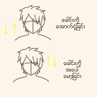

ေခါင္း ေလ့က်င့္ခန္း

ဦးေႏွာက္ႏွင့္ ဆိုင္တဲ့ ေရာဂါရွိသူေတြ၊ လည္ပင္းဆိုင္ရာ ျပႆနာရွိသူေတြ မျပဳလုပ္သင့္ပါ။
အဆင့္ ၂
ပံုမွန္ အေနအထား အတိုင္း ရွိေနေသာ ေခါင္းကို ေအာက္စိုက္လိုက္ပါ။
ေမးေစ့ ႏွင့္ ရင္ညြန္႔ ထိသည္အထိ ငံု႔ပါ။ ျပီးရင္ ျပန္ေမာ့ပါ။
မူလအေနအထားကို ေရာက္ရင္ ျပန္ငံု႔ပါ။
သံုးၾကိမ္ေလာက္ ငံု႔ျပီးရင္ မူလ အေနအထားကေန အေပၚကို ျဖည္းျဖည္း ေမာ့ပါ။
မူလအေနအထား ေရာက္သည္အထိ ငံု႔ပါ။
ေခါင္းေမာ့ျခင္းကိုလဲ ၃ၾကိမ္ ျပဳလုပ္ပါ။